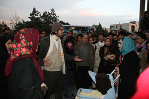
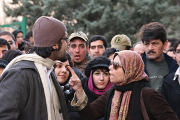
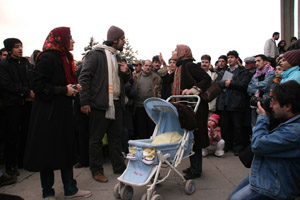

|
|

نمايش اعتراضي /نگاهي به اجراي دو تئاتر با موضوع چند همسري
آزاده فرامرزيها
جمعه26 بهمن 1386
هنر همواره راهکار بسیار مناسبی برای نمایان ساختن نارضایتی ها و اعتراضات مختلف اجتماعی و سیاسی بوده است. تا آنجا که بسیاری از سبکها و شیوه های مختلف هنری, بخصوص در قرن بیستم, از جنبشی اعتراضی و گاها انقلابی بیرون آمده اند. این امر بویژه در هنرهای نمایشی جایگاهی تاریخی دارد. از آنجا که هنر نمایش هنر برقراری ارتباط مستقیم و زنده با مخاطب است, و این مخاطب از فرد یا افراد خاصی تشکیل نشده و عموم مردم یک جامعه را در بر می گیرد, در موارد مختلف از اهداف سیاسی و اجتماعی برخوردار بوده و پیام اعتراض خود را با مخاطب حاضر در میان گذارده است. موفقیت هنر تئاتر در نمایش اختلاف نظرها و بیان نارضایتی ها تا جایی پیش می رود که در طول تاریخ تئاتر بسیاری از حکومتهایی با پارامترهای استبدادی مانع وجود این هنر در جوامع خود شده و به شدت با آن برخورد می کرده اند.
مسائل و مشکلات اجتماعی بشر همگام با رشد جمعیت و بزرگتر شدن جوامع بیشتر و بیشتر شده اند. و همین موضوع اصلی ترین دلیل پرداختن هر چه بیشتر هنرمندان به مقولات اجتماعی است. هنرمند سعی دارد با نگاه دقیق, و شاید ظریف خود, بجای افراد جامعه ببیند و آنچه دیده است را به سبک و شیوه خاص خود به بقیه نشان دهد. هنرمند خود را آئینه ای می سازد تا من و شما – که اغلب در روزمرگیهای خود بسته شده و عادت کردنها فرصت دیدن را از ما گرفته اند- ناهنجاریها و نابسامانیهای اجتماعی را که در آن زندگی می کنیم ببینیم, آنها را تحلیل کنیم و نسبت به آن عکس العمل نشان دهیم.
تئاتر ایران اما از زمان بوجود آمدنش بیشتر درگیر مسائل اساطیری و ازلی – ابدی بوده و به جز دوره کوتاه دهه طلایی چهل, خود را از مسائل و معضلات اجتماعی دور نگه داشته است. زن در اینگونه تئاتری جایگاه اساطیری مادر_ زمین دارد که به نوعی فراتر از اجتماع قرار می گیرد و پلشتیهای زمانه در او جایی ندارد. اما در سالهای اخیر توجه این هنر به اجتماع پیرامونش بیشتر و بیشتر شده و در این رهگذر جایگاه زن نیز از آسمان به زمین فرود آمد و به عنوان فردی از جامعه مورد تجزیه و تحلیل قرار گرفت.
به عنوان نمونه می توان به دو اثر اجرا شده در ماههای اخیر اشاره کرد که یکی آذر ماه امسال در جشنواره تئاتر کانونهای نمایشی و دیگری در طی چند روز گذشته در جشنواره تئاتر فجر که به شکلی جالب و اتفاقی از موضوع و شکل نمایشی واحدی برخوردار بودند.

نمایش "خانواده" از گروه تئاتر "سرکوب شدگان" و به سرپرستی علی ظفر قهرمانی نژاد و نمایش "از کنار تو" به کارگردانی آزاده گنجه نمایشهایی بودند که با موضوع زنان و در اعتراض به لایحه حمایت از خانواده و بخصوص تعدد زوجات با شیوه مجادله آگوستو بوآل و بصورت کارگاهی اجرا شدند.
این شیوه اجرای تئاتر با به بحث و جدل گذاردن موضوعی با تماشاگر شکل می گیرد. بدین معنا که تماشاگر را از شکل منفعل تماشاگر صرف خارج کرده و با ارائه نقشی فعال, او را به نوعی به بازیگر تبدیل می نماید.
طرح کلی نمایش "خانواده" داستان زنی است که شوهرش قصد ازدواج با یکی از همکارانش را دارد. اعضای گروه تئاتر این شرایط دردناک را در حالت ها و وضعیت های مختلف قرار داده و با کمک گرفتن از تماشاگران عکس العمل ها را نسبت به آن تغییر می دادند.

"از کنار تو" نیز موضوعی تقریبا مشابه را دنبال کرده و با مشارکت تماشاگرانش مسئله چندهمسری را مورد انتقاد قرار داد.
نمایشها بارها و بارها از زوایا و دیدگاههای مختلف مردم عبور کرده و اجرا شدند. دیدگاه های مختلفی که هرکدام نوعی اعتراض به این مسئله بود؛ مثلا در نمایش خانواده در قسمتی مردی داوطلب شد تا بجای نقش مرد نمایش بازی کند و شکل رابطه خود را با همسر جدید تغییر دهد، یا زنی داوطلب بازی در نقش همسر اول شده و تصمیم گرفت ماجرا را به شکایت برساند، زن دیگری به جای همسر دوم وارد شده و با آگاهی از متاهل بودن مرد، تصمیم به جدا شدن از او گرفت ( راهکاری که بیش از همه مورد پسند سایر تماشاگران واقع شد).

اعضای هر دو گروه از حضور فعالانه تماشاگران خشنود بوده، آن را تجربه ای فراموش نشدنی برای خود خواندند. نکته مهم ، اعتراض همه مخاطبان از اقشار و سنین مختلف به این مسئله ناخوشایند بود و این بار دیگر بر تاثیرگذاری هنر – وبخصوص هنر نمایش- بر مخاطب صحه می گذارد. و اینکه یک بیان هنری خوب, دقیق و صادق تا چه حد در آگاه سازی و بکارگیری شعور تماشاگر موفق خواهد بود.
مشکلات اجتماعی جامعه امروز ما بسیارند و هنر زیباترین شکل بیان آنهاست.
عکس ها توسط راحله عسگري زاده دقايقي پيش از بازداشت گرفته شده است .